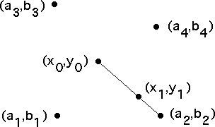

| The Chaos Game is played by specifying
a number of vertices (a1, b1),
(a2, b2), ..., and
(aN, bN), and a scaling factor r < 1. |
| To play the
game, start with the point (x0, y0) and
pick one of the vertices, say (ai, bi), randomly. |
| The point (x1, y1) is the fraction r of the
distance between (ai, bi) and
(x0, y0). That is, |
| (x1, x1) = r⋅(x0, y0)
+ (1 - r)⋅(ai, bi) |
| For example, with four vertices, r = 1/3, and
(a2, b2) is the first randomly
selected vertex, we obtain |
|  |
| (If r = 1, the point (x1, y1) is the same as
the initial point (x0, y0);
if r = 0, the
point (x1, y1) is the same as selected
vertex (ai, bi).) |
| Now pick another vertex, (aj, bj),
randomly. |
| The point (x2, y2) is given by |
| (x2, x2) = r⋅(x1, y1)
+ (1 - r)⋅(aj, bj) |
| and so on. |
| The Chaos Game Plot is the sequence of points
(x0, y0), (x1, y1),
... generated this way. |